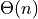

10. Balanced Binary Search Trees¶
In chapter 6 binary search trees were defined along with a recursive insert algorithm. The discussion of binary search trees pointed out they have problems in some cases. Binary search trees can become unbalanced, actually quite often. When a tree is unbalanced the complexity of insert, delete, and lookup operations can get as bad as . This problem with unbalanced binary search trees was the motivation for the development of height-balanced AVL trees by G. M. Adelson-Velskii and E. M. Landis, two Soviet computer scientists, in 1962. AVL trees were named for these two inventors. Their paper on AVL trees :cite:`avltrees` described the first algorithm for maintaining balanced binary search trees. The chapter goes on to discuss Splay Trees as another example of balanced binary search trees.
10.1. AVL Tree Implementations¶
AVL trees maintain their own balance. The balance can be maintained in one of two ways. Either the height of each node in the tree can be maintained or the balance of each node in the tree can be maintained. If maintaining the height, there is a little more work to be done to adjust heights all the way up the tree. If balance is maintained then the code gets a little trickier, but there balances only need to be adjusted up to a pivot node.
In addition, AVL trees can be implemented with recursive or iterative insert and delete methods. Both are described in the text.
10.1.1. Iteratively Implemented AVL Tree¶
You can download avltree.py to work on an iterative implementation of AVL Trees.
1'''
2 File: avltree.py
3 Author: Steve Hubbard, and
4 Date:
5 Description: This module provides the AVLNode and AVLTree classes.
6'''
7
8from stack import Stack
9
10class AVLNode:
11 def __init__(self, item, balance = 0):
12 self.item = item
13 self.left = None
14 self.right = None
15 self.balance = balance
16
17 def __str__(self):
18 ''' This performs an inorder traversal of the tree rooted at self,
19 using recursion. Return the corresponding string.
20 '''
21 st = str(self.item) + ' ' + str(self.balance) + '\n'
22 if self.left != None:
23 st = str(self.left) + st # A recursive call: str(self.left)
24 if self.right != None:
25 st = st + str(self.right) # Another recursive call
26 return st
27
28 def rotateLeft(self):
29 ''' Perform a left rotation of the subtree rooted at the
30 receiver. Answer the root node of the new subtree.
31 '''
32 child = self.right
33 if (child == None):
34 print( 'Error! No right child in rotateLeft.' )
35 return None # redundant
36 else:
37 self.right = child.left
38 child.left = self
39 return child
40
41 def rotateRight(self):
42 ''' Perform a right rotation of the subtree rooted at the
43 receiver. Answer the root node of the new subtree.
44 '''
45 child = self.left
46 if (child == None):
47 print( 'Error! No left child in rotateRight.' )
48 return None # redundant
49 else:
50 self.left = child.right
51 child.right = self
52 return child
53
54 def rotateRightThenLeft(self):
55 '''Perform a double inside left rotation at the receiver. We
56 assume the receiver has a right child (the bad child), which has a left
57 child. We rotate right at the bad child then rotate left at the pivot
58 node, self. Answer the root node of the new subtree. We call this
59 case 3, subcase 2.
60 '''
61 pass
62
63 def rotateLeftThenRight(self):
64 '''Perform a double inside right rotation at the receiver. We
65 assume the receiver has a left child (the bad child) which has a right
66 child. We rotate left at the bad child, then rotate right at
67 the pivot, self. Answer the root node of the new subtree. We call this
68 case 3, subcase 2.
69 '''
70 pass
71
72class AVLTree:
73 def __init__(self):
74 self.root = None
75 self.count = 0
76
77 def __str__(self):
78 st = 'There are ' + str(self.count) + ' nodes in the AVL tree.\n'
79 return st + str(self.root) # Using the string hook for AVL nodes
80
81 def insert(self, newItem):
82 ''' Add a new node with item newItem, if there is not a match in the
83 tree. Perform any rotations necessary to maintain the AVL tree,
84 including any needed updates to the balances of the nodes. Most of the
85 actual work is done by other methods.
86 '''
87 pass
88
89 def adjustBalances(self, theStack, pivot, newItem):
90 ''' We adjust the balances of all the nodes in theStack, up to and
91 including the pivot node, if any. Later rotations may cause
92 some of the balances to change.
93 '''
94 pass
95
96 def case1(self, theStack, pivot, newItem):
97 ''' There is no pivot node. Adjust the balances of all the nodes
98 in theStack.
99 '''
100 self.adjustBalances(theStack, pivot, newItem)
101
102 def case2(self, theStack, pivot, newItem):
103 ''' The pivot node exists. We have inserted a new node into the
104 subtree of the pivot of smaller height. Hence, we need to adjust
105 the balances of all the nodes in the stack up to and including
106 that of the pivot node. No rotations are needed.
107 '''
108 self.adjustBalances(theStack, pivot, newItem)
109
110 def case3(self, theStack, pivot, newItem):
111 ''' The pivot node exists. We have inserted a new node into the
112 larger height subtree of the pivot node. Hence rebalancing and
113 rotations are needed.
114 '''
115 self.adjustBalances(theStack, pivot, newItem)
116 # Lots more!!!!
117
118 def search(self, newItem):
119 ''' The AVL tree is not empty. We search for newItem. This method will
120 return a tuple: (pivot, theStack, parent, found).
121 In this tuple, if there is a pivot node, we return a reference to it
122 (or None). We create a stack of nodes along the search path -- theStack.
123 We indicate whether or not we found an item which matches newItem. We
124 also return a reference to the last node the search examined -- referred
125 to here as the parent. (Note that if we find an object, the parent is
126 reference to that matching node.) If there is no match, parent is a
127 reference to the node used to add a child in insert().
128 '''
129 pass
130
131
132def main():
133 print("Our names are ")
134 print()
135 a = AVLNode(20, -1)
136 b = AVLNode( 30, -1)
137 c = AVLNode(-100)
138 d = AVLNode(290)
139 '''
140 print(a)
141 print(b)
142 '''
143 t = AVLTree()
144 t.root = b
145 b.left = a
146 a.left = c
147 b.right = d
148 t.count = 4
149 print(t)
150
151 a = AVLNode(50)
152 b = AVLNode(30)
153 c = AVLNode(40)
154 a.left = b
155 b.right = c
156 print("Testing rotateLeftThenRight()")
157 print(a.rotateLeftThenRight())
158
159 (pivot, theStack, parent, found) = t.search(-70)
160 print(pivot.item, parent.item, found)
161 print()
162 print("The items in the nodes of the stack are: ")
163 while not theStack.isEmpty():
164 current = theStack.pop()
165 print(current.item)
166 print()
167
168 (pivot, theStack, parent, found) = t.search(25)
169 print(pivot.item, parent.item, found)
170
171 (pivot, theStack, parent, found) = t.search(-100)
172 print(pivot.item, parent.item, found)
173
174if __name__ == '__main__': main()
175''' The output from main():
176[evaluate avltree.py]
177Our names are
178There are 4 nodes in the AVL tree.
179-100 0
18020 -1
18130 -1
182290 0
183
184Testing rotateLeftThenRight()
18530 0
18640 0
18750 0
188
18920 -100 False
190
191The items in the nodes of the stack are:
192-100
19320
19430
195
19620 20 False
19720 -100 True
198'''
10.1.2. Recursively Implemented AVL Tree¶
AVL trees may also be implemented recursively meaning that the insert and delete methods can be written recursively. The outline of this implementation can be seen in the text. It is relatively short and is not provided for download.
10.2. Splay Tree Implementations¶
Splay trees do not maintain the balance or height. Instead they rely on rotations that always rotate a inserted or accessed element to the root of the tree. In doing this they maintain a balance in the tree, often exploiting spatial locality. Again, splay trees may be implemented recursively or iteratively.
10.2.1. Iteratively Implemented Splay Tree¶
You can download splaytree.py to work on an iterative implementation of splay trees. To run this program you will need to download stack.py module and you’ll need to download person.py module.
1'''
2 File: splaytree.py
3 Author(s): Steve Hubbard and
4 Date: 9/17/13
5 Description: This module implements the SplayTree class and the
6 SplayNode class. The classes use bottom up splaying rather than
7 top down splaying. We do not allow duplicate objects in the tree.
8'''
9
10from person import Person
11from copy import deepcopy
12from stack import Stack
13
14class SplayNode:
15 ''' This module implements the SplayNode class. This
16 class in turn is used by the SplayTree class. The classes
17 use bottom up splaying rather than top down splaying. We
18 do not allow duplicate objects in the tree.
19 '''
20
21 def __init__(self, item, left = None, right = None):
22 self.left = left
23 self.item = item
24 self.right = right
25
26 def __str__(self):
27 st = '('
28 if (self.left == None):
29 st += '*'
30 else:
31 st += str(self.left) # recursion
32 st += str(self.item)
33 if (self.right == None):
34 st += '*'
35 else:
36 st += str(self.right) # recursion
37 st += ')'
38 return st
39
40 def inorder(self):
41 ''' Perform an inorder traversal of the subtree rooted at
42 the receiver. Print each item in this subtree during
43 the traversal. This is done with recursion.
44 '''
45 pass
46
47 def insertInNode(self, anItem):
48 ''' Try to insert a copy of anItem into the bottom up splay
49 tree rooted at the receiver. If anItem is already in the tree,
50 do not insert an extra copy. In any case, splay the new node,
51 or the last node on the search path, to the root. The method
52 will answer a tuple. The first element is True or False
53 according to whether a new element was added or not. The
54 second element is the new root node.
55 '''
56 pass
57
58 def rotateLeft(self):
59 ''' Perform a left rotation of the subtree rooted at the
60 receiver. Answer the root node of the new subtree.
61 '''
62 child = self.right
63 if (child == None):
64 print( 'Error! No right child in rotateLeft. ' )
65 return None # redundant
66 else:
67 self.right = child.left
68 child.left = self
69 return child
70
71 def splayToRoot(self, stack):
72 ''' Perform a bottom up splay beginning at the node at the
73 top of the stack. Answer the root of the new tree.
74 '''
75 pass
76
77 ''' Many more methods! '''
78
79
80class SplayTree:
81
82 def __init__(self):
83 self.size = 0
84 self.root = None
85
86 def __str__(self):
87 if self.root != None:
88 return str(self.root)
89 else:
90 return ""
91
92 def delete(self, anItem):
93 ''' Atempt to find a match (==) for anItem in the receiver.
94 If found, splay the corresponding node to the root and answer
95 the item of the node. If not found, splay the last node on
96 the search path to the root. In this case, answer None. If
97 found, we remove the node and make the largest element of the
98 new left subtree (from the splaying of the node to the root
99 position) the new root node of the tree. Of course finding
100 the largest element uses a splaying on that left subtree.
101 If there is no left subtree, the right subtree becomes the
102 root. This may leave us with an empty tree. If found,
103 decrement the size of the tree and answer the item deleted.
104 If not found, answer None.
105 '''
106 pass
107
108 def findMax(self):
109 ''' Find the largest element in the splay tree. Splay that
110 element to the root. Answer a deep copy of the element.
111 If the tree is empty, answer None.
112 '''
113 pass
114
115 def findMin(self):
116 ''' Find the smallest element in the splay tree. Splay that
117 element to the root. Answer a deep copy of the element. If
118 the tree is empty, answer None.
119 '''
120 if (self.root == None):
121 return None
122 self.root = self.root.findMin()
123 return deepcopy(self.root.getItem())
124
125 def getSize(self):
126 return self.size
127
128 def inorder(self):
129 ''' Print the contents of the receiver, in inorder.
130 Print one item per line.
131 '''
132 if self.root != None:
133 self.root.inorder()
134
135 def insert(self, anItem):
136 ''' Insert a deep copy of anItem into the bottom up splay tree.
137 If anItem is already present in the tree, do not insert a new
138 copy of anItem. If anItem is added, increment the size of
139 the receiver. In either case, we splay from
140 the last node. If anItem was added, answer anItem. If not,
141 answer None.
142 '''
143 pass
144
145 def retrieve(self, anItem):
146 pass
147
148 def update(self, anItem):
149 pass
150
151
152def main():
153
154 print('My name is ')
155 print('Test the SplayNode class: ')
156
157 a = SplayNode(20, SplayNode(10), SplayNode(25))
158 b = SplayNode(40, SplayNode(35), SplayNode(45))
159 c = SplayNode(30, a, b)
160 x = c.rotateLeft()
161 print( x )
162 print( str(x) == '((((*10*)20(*25*))30(*35*))40(*45*))' )
163 print( '' )
164
165 a = SplayNode(20, SplayNode(10), SplayNode(25))
166 b = SplayNode(40, SplayNode(35), SplayNode(45))
167 c = SplayNode(30, a, b)
168 x = c.rotateRight()
169 print( x )
170 print( str(x) == '((*10*)20((*25*)30((*35*)40(*45*))))' )
171 print( '' )
172
173 a = SplayNode(20, SplayNode(10), SplayNode(25))
174 b = SplayNode(40, SplayNode(35), SplayNode(45))
175 c = SplayNode(30, a, b)
176 d = SplayNode(60, SplayNode(55), SplayNode(65))
177 e = SplayNode(90, SplayNode(80), SplayNode(100))
178 f = SplayNode(70, d, e)
179 root = SplayNode(50, c, f)
180 print( root )
181 print( '' )
182
183 a = SplayNode(20, SplayNode(10), SplayNode(25))
184 b = SplayNode(40, SplayNode(35), SplayNode(45))
185 c = SplayNode(30, a, b)
186 d = SplayNode(60, SplayNode(55), SplayNode(65))
187 e = SplayNode(90, SplayNode(80), SplayNode(100))
188 f = SplayNode(70, d, e)
189 root = SplayNode(50, c, f)
190 x = root.rotateRightThenLeft()
191 print( x )
192 print( str(x) == \
193 '(((((*10*)20(*25*))30((*35*)40(*45*)))50(*55*))60((*65*)70((*80*)90(*100*))))' )
194 print( '' )
195
196 a = SplayNode(20, SplayNode(10), SplayNode(25))
197 b = SplayNode(40, SplayNode(35), SplayNode(45))
198 c = SplayNode(30, a, b)
199 d = SplayNode(60, SplayNode(55), SplayNode(65))
200 e = SplayNode(90, SplayNode(80), SplayNode(100))
201 f = SplayNode(70, d, e)
202 root = SplayNode(50, c, f)
203 x = root.rotateLeftThenRight()
204 print( x )
205 print( str(x) == \
206 '((((*10*)20(*25*))30(*35*))40((*45*)50(((*55*)60(*65*))70((*80*)90(*100*)))))' )
207 print( '' )
208
209 a = SplayNode(20, SplayNode(10), SplayNode(25))
210 b = SplayNode(40, SplayNode(35), SplayNode(45))
211 c = SplayNode(30, a, b)
212 d = SplayNode(60, SplayNode(55), SplayNode(65))
213 e = SplayNode(90, SplayNode(80), SplayNode(100))
214 f = SplayNode(70, d, e)
215 root = SplayNode(50, c, f)
216 x = root.doubleRotateLeft()
217 print( x )
218 print( str(x) == \
219 '((((((*10*)20(*25*))30((*35*)40(*45*)))50((*55*)60(*65*)))70(*80*))90(*100*))' )
220 print( '' )
221
222 a = SplayNode(20, SplayNode(10), SplayNode(25))
223 b = SplayNode(40, SplayNode(35), SplayNode(45))
224 c = SplayNode(30, a, b)
225 d = SplayNode(60, SplayNode(55), SplayNode(65))
226 e = SplayNode(90, SplayNode(80), SplayNode(100))
227 f = SplayNode(70, d, e)
228 root = SplayNode(50, c, f)
229 x = root.doubleRotateRight()
230 print( x )
231 print( str(x) == \
232 '((*10*)20((*25*)30(((*35*)40(*45*))50(((*55*)60(*65*))70((*80*)90(*100*))))))' )
233 print( '' )
234
235 a = SplayNode(20, SplayNode(10), SplayNode(25))
236 b = SplayNode(40, SplayNode(35), SplayNode(45))
237 c = SplayNode(30, a, b)
238 d = SplayNode(60, SplayNode(55), SplayNode(65))
239 e = SplayNode(90, SplayNode(80), SplayNode(100))
240 f = SplayNode(70, d, e)
241 root = SplayNode(50, c, f)
242 x = root.find(35)
243 print( x )
244 print( str(x) == \
245 '((((*10*)20(*25*))30*)35((*40(*45*))50(((*55*)60(*65*))70((*80*)90(*100*)))))')
246
247 print('Test the SplayTree class: ')
248 t = SplayTree()
249 t.insert(1)
250 t.insert(2)
251 t.insert(3)
252 t.insert(4)
253 t.insert(5)
254 t.insert(6)
255 t.insert(7)
256 t.retrieve(1)
257 print( str(t) == '(*1(((*2(*3*))4(*5*))6(*7*)))')
258 print( 'The size of the tree is ' + str(t.getSize()) )
259
260 t = SplayTree()
261 t.insert(1)
262 t.insert(2)
263 t.insert(3)
264 t.insert(4)
265 t.insert(5)
266 t.insert(6)
267 t.insert(7)
268 t.findMin()
269 print( str(t) == '(*1(((*2(*3*))4(*5*))6(*7*)))')
270
271 t = SplayTree()
272 t.insert(1)
273 t.insert(2)
274 t.insert(3)
275 t.insert(4)
276 t.insert(5)
277 t.insert(6)
278 t.insert(7)
279 t.retrieve(1)
280 t.delete(3)
281 print( str(t) == '((*1*)2((*4(*5*))6(*7*)))' )
282
283 t = SplayTree()
284 t.insert(1)
285 t.insert(2)
286 t.insert(3)
287 t.insert(4)
288 t.insert(5)
289 t.insert(6)
290 t.insert(7)
291 t.retrieve(1)
292 t.delete(3)
293 t.findMax()
294 print( str(t) == '((((*1*)2(*4(*5*)))6*)7*)')
295
296 t = SplayTree()
297 t.insert(Person('Joe', 25))
298 t.insert(Person('Jill',35))
299 t.insert(Person('Jon',15))
300 t.insert(Person('Jack',25))
301 t.insert(Person('John',30))
302 t.insert(Person('Jud',95))
303 t.insert(Person('Joey',27))
304 st = str(t) + '\n'
305 t.update(Person('James', 25))
306 st += str(t) + '\n'
307 x = t.retrieve(Person('',15))
308 st += str(x) + '\n'
309 st += str(t) + '\n'
310 x = t.delete(Person('', 35))
311 st += str(x) + '\n'
312 st += str(t) + '\n'
313 x = t.findMax()
314 st += str(x) + '\n'
315 st += str(t) + '\n'
316 print( t )
317
318 print( 'The size of the tree is ' + str(t.getSize()) )
319
320 t = SplayTree()
321 t.insert(1)
322 t.insert(2)
323 t.insert(3)
324 t.insert(4)
325 t.insert(5)
326 t.insert(6)
327 t.insert(7)
328 t.insert(3.5)
329 print( str(t) == '((((*1*)2*)3*)3.5(((*4*)5(*6*))7*))' )
330
331 t = SplayTree()
332 t.insert(1)
333 t.insert(2)
334 t.insert(3)
335 t.insert(4)
336 t.insert(5)
337 t.insert(6)
338 t.insert(7)
339 t.insert(3.5)
340 t.delete(3.5)
341 print( str(t) == '(((*1*)2*)3(((*4*)5(*6*))7*))')
342 print( 'The size of the tree is ' + str(t.getSize()) )
343
344
345 t = SplayTree()
346 t.insert(3)
347 t.insert(2)
348 t.insert(1)
349 t.delete(1)
350 print( 'The size of the tree is ' + str(t.getSize()) )
351
352 t = SplayTree()
353 t.insert(Person('Joe', 25))
354 t.insert(Person('Jill',35))
355 t.insert(Person('Jon',15))
356 t.insert(Person('Jack',25))
357 t.insert(Person('John',30))
358 t.insert(Person('Jud',95))
359 t.insert(Person('Joey',27))
360 t.inorder()
361
362if __name__ == '__main__': main()
363
364''' Output, from splaytree.py, wrapped around!
365[evaluate splaytree.py]
366My name is
367Test the SplayNode class:
368((((*10*)20(*25*))30(*35*))40(*45*))
369True
370
371((*10*)20((*25*)30((*35*)40(*45*))))
372True
373
374((((*10*)20(*25*))30((*35*)40(*45*)))50(((*55*)60(*65*))70((*80*)90(*100*))))
375
376(((((*10*)20(*25*))30((*35*)40(*45*)))50(*55*))60((*65*)70((*80*)90(*100*))))
377True
378
379((((*10*)20(*25*))30(*35*))40((*45*)50(((*55*)60(*65*))70((*80*)90(*100*)))))
380True
381
382((((((*10*)20(*25*))30((*35*)40(*45*)))50((*55*)60(*65*)))70(*80*))90(*100*))
383True
384
385((*10*)20((*25*)30(((*35*)40(*45*))50(((*55*)60(*65*))70((*80*)90(*100*))))))
386True
387
388((((*10*)20(*25*))30*)35((*40(*45*))50(((*55*)60(*65*))70((*80*)90(*100*)))))
389True
390Test the SplayTree class:
391True
392The size of the tree is 7
393True
394True
395True
396((((*Name: Jon Id: 15 (*Name: James Id: 25 *))Name: Joey Id: 27 *)
397 Name: John Id: 30 *)Name: Jud Id: 95 *)
398The size of the tree is 5
399True
400True
401The size of the tree is 7
402The size of the tree is 2
403Name: Jon Id: 15
404Name: Joe Id: 25
405Name: Joey Id: 27
406Name: John Id: 30
407Name: Jill Id: 35
408Name: Jud Id: 95
409
410'''
411
412
413
414
10.2.2. Recursively Implemented Splay Tree¶
A recursive implementation of splay trees relies on keeping track of the left or right double rotations as the recursive insert or lookup returns up the tree. To accomplish this you must call a rotate function. Calling rotate[“RL”](pivot) would call the rotate right then left double rotation. The rotate variable is a dictionary (i.e. hash table) in the code provided here.
You can download splay.py file to begin working on the recursive splay tree implementation.
1'''
2 File: splay.py
3 Author: Kent D. Lee
4 Date: 8/21/2014
5 Description: This module implements the SplayTree class. This
6 class uses the SplayNode class. The classes
7 use bottom up splaying rather than top down splaying. We
8 do not allow duplicate objects in the tree.
9
10 Delete is not implemented in this file currently. Test code
11 should be added to thoroughly test insert, lookup, and delete.
12 Recall that looking up a value rotates it to the root. Deleting
13 an item rotates its parent to the root.
14'''
15
16def rotateLeft(pivot):
17 pass
18
19def rotateRight(pivot):
20 pass
21
22def rotateRL(pivot):
23 pass
24
25def rotateLR(pivot):
26 pass
27
28def rotateRR(pivot):
29 pass
30
31def rotateLL(pivot):
32 pass
33
34rotate = {}
35rotate["RL"] = rotateRL
36rotate["LR"] = rotateLR
37rotate["RR"] = rotateRR
38rotate["LL"] = rotateLL
39
40singleRotate = {}
41singleRotate["R"] = rotateRight
42singleRotate["L"] = rotateLeft
43
44class SplayTree:
45
46 class SplayNode:
47 def __init__(self, item, left=None, right=None):
48 self.item = item
49 self.left = left
50 self.right = right
51
52 def __str__(self):
53 st = '('
54 if (self.left == None):
55 st += '*'
56 else:
57 st += str(self.left)
58 st += str(self.item)
59 if (self.right == None):
60 st += '*'
61 else:
62 st += str(self.right)
63 st += ')'
64 return st
65
66 def __init__(self):
67 self.root = None
68 self.rString = ""
69
70
71 # Pass searching = True if just searching and not
72 # really inserting. If the item is found, true is
73 # returned. If the item is not found, an exception
74 # containing false is raised.
75
76 def insert(self,item,searching=False):
77
78 def __insert(root,item):
79 ''' return the new root after inserting
80 item into the tree currently rooted at
81 root. If searching for the value and not
82 inserting, then raise Exception(False) if
83 the item is not found.
84 '''
85
86 return root
87
88 self.found = False
89
90 self.root = __insert(self.root,item)
91
92 # Handle any single rotation that must
93 # be done after inserting the value.
94 if self.rString in singleRotate:
95 self.root = singleRotate[self.rString](self.root)
96
97 self.rString = ""
98
99 return self.found
100
101 def lookup(self,item):
102
103 try:
104 return self.insert(item,True)
105 except Exception as inst:
106 if inst.args[0] == False:
107 return False
108
109 raise Exception(inst)
110
111 def __str__(self):
112 if self.root != None:
113 return str(self.root)
114 else:
115 return ""
116
117def main():
118 # This should print the following.
119 #(*20*)
120 #((*20*)30*)
121 #(*5(*20(*30*)))
122 #((*5*)8(*20(*30*)))
123 #(((*5*)8((*20*)30*))42*)
124 #(((*5*)8*)15((*20(*30*))42*))
125 #(((*5*)8*)10(*15((*20(*30*))42*)))
126 t = SplayTree2()
127 t.insert(20)
128 print(str(t))
129 t.insert(30)
130 print(str(t))
131 t.insert(5)
132 print(str(t))
133 t.insert(8)
134 print(str(t))
135 t.insert(42)
136 print(str(t))
137 t.insert(15)
138 print(str(t))
139 t.insert(10)
140 print(str(t))
141
142
143if __name__ == '__main__': main()
10.3. Figures from Text¶

Fig. 1: AVL Tree Case 1 - No Pivot Node¶

Fig. 2: AVL Tree Case 2 - No Rotate¶

Fig. 3: AVL Tree Case 3A - Single Rotation¶

Fig. 4: AVL Tree Case 3B - Double Rotation¶

Fig. 5: AVL Tree Case 3B Step 1 Rotate Toward¶

Fig. 6: AVL Tree Case 3B Step 2 Rotate Away¶

Fig. 7: AVL Tree Case 3A Right Rotation¶

Fig. 8: AVL Tree Case 3A Left Rotation¶

Fig. 9: AVL Tree Case 3B Steps 1 and 2¶

Fig. 10: Splay Tree Double-Right Rotate¶

Fig. 11: Splay Tree Double-Left Rotate¶

Fig. 12: Splay Tree Right-Left Rotate¶

Fig. 13: Splay Tree Left-Right Rotate¶

Fig. 14: Splay Tree Example¶

Fig. 15: Average Insert/Lookup Time¶